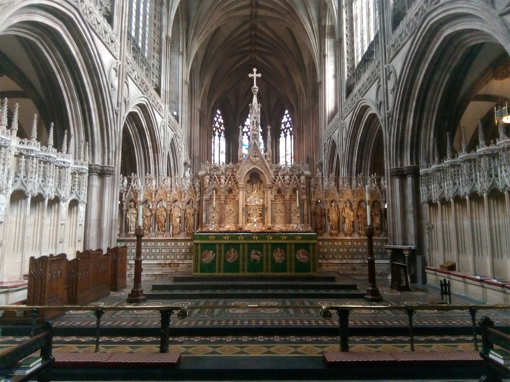

Lichfield Cathedral hosts numerous musical events throughout the year which are all available to the genneral public. These events include a music for reflection concert which usally takes place in the summertime at lunchtime, the evening organ recital concert where the cathedral shows of the hill organ which is a truly wonderful instroment usually takes place in the autumn and features some of the finest virtuoso payers. There are also numerous one of perfomrances that are held at the cathedral throughout the year, these can include performances by people such as The Lichfield Cathedral Chamber Choir, Cathedral Chorus, Cathedral Choir and more.
